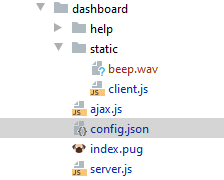
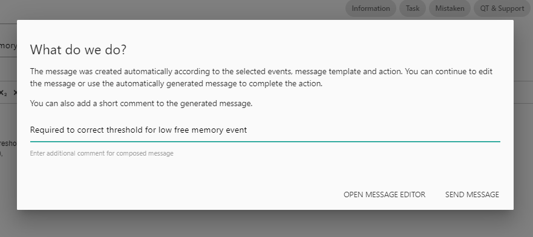
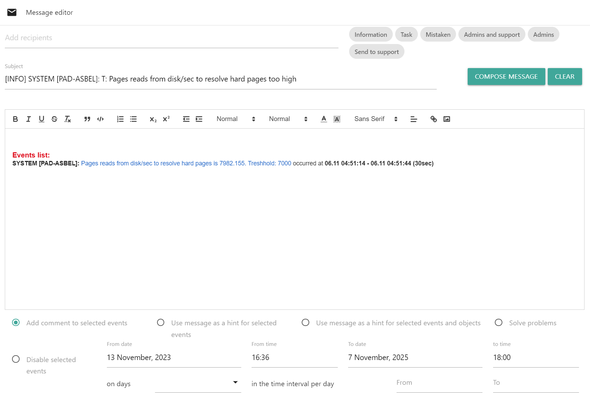
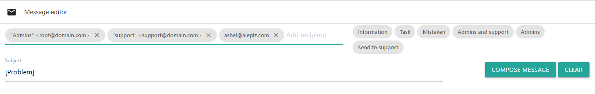
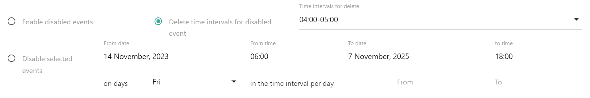
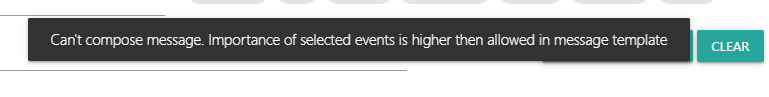
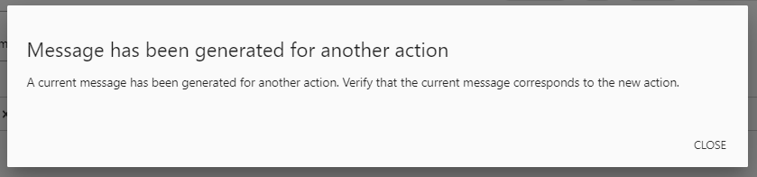

Возвращаемое значение: нет
Предназначение Dashboard
Dashboard служит для просмотра и обработки событий, генерируемых сборщиком Event generator. Интерфейс Dashboard состоит из:
- Message editor: окно формирования сообщения и обработки событий
- Historical events: события, которые произошли или происходят и не были обработаны администратором
- Current events: текущие события, которые происходят сейчас
- Disabled events: отключенные события
- Comments: события, обработанные администратором
С помощью Dashboard можно организовать полноценный рабочий процесс с мониторингом и обработкой всех происходящих событий. Можно установить права доступа до элементов и действий Dashboard в зависимости от ролей пользователей. Ниже приведен пример регламента рабочего процесса.
- group Организация рабочего процесса (нажмите для того, чтобы развернуть)
Организация рабочего процесса
- В течение рабочей смены назначается администратор отвечающий за мониторинг. Мониторинг является непрерывным процессом, поэтому если по какой-то причине администратор временно не может исполнять обязанности, он должен их явно передать другому администратору.
- В начале рабочей смены администратор обрабатывает текущие события, которые происходят в настоящее время. Такие события расположены в таблице Current events
- После обработки текущих событий администратор начинает обрабатывать события, которые произошли в нерабочий период. Эти события расположены в таблице Historical events
- Процесс обработки событий повторяется в течение рабочей смены.
Обработка событий
Обработка событий заключается в его анализе и принятии решения о том, какие действия необходимо выполнить с событием. Обработка событий выполняется с использованием Message editor. Под формой ввода сообщения располагаются необходимые элементы для обработки событий.
- Если событие сгенерировано из-за ошибки настройки системы мониторинга, администратор устраняет ошибку и помечает событие соответствующим образом с помощью шаблона. При необходимости, администратор принудительно помечает событие как решенное с помощью Solve problems.
- Если событие сгенерировано из-за временного изменения регламента и в течение какого-то периода реагировать на событие не нужно, администратор отключает генерацию событий на этот период времени, либо устанавливает временной интервал внутри суток в течение которого событие не будет генерироваться. Это можно сделать с помощью Disable selected events until... Если необходимо включить отключенное событие, используется Enable disabled events. Если необходимо удалить временной интервал отключения события, используется Delete time interval for disabled event
- Если известен способ решения проблемы, администратор вносит алгоритм решения проблемы как подсказку для события, привязывая подсказку или ко всем объектам, связанным с данным событием с помощью Use message as hint for selected events, или к конкретному событию и объекту с помощью Use message as hint for selected events and objects.
- В остальных случаях по администратор выбирает один из заранее настроенных шаблонов, при необходимости дополняет автоматическое описание события своим комментарием и отправляет событие для дальнейшей обработки в службу поддержки или просто сохраняет обработанное событие в базу данных.
- settings Настройки Dashboard (нажмите для того, чтобы развернуть)
Описание файла настроек config.json
Настройки Dashboard хранятся в файле config.json, в его корневой папке. Изменить настройки можно с помощью действия Action editor
Параметры файла настроек:
Ниже описаны параметры, относящиеся непосредственно к настройкам действия Dashboard
- updateInterval - интервал обновления Dashboard в секундах. По умолчанию 15 секунд
- commentsInterval - интервал в днях отображения данных в таблице Comments. По умолчанию 2 дня
- dontSendMessage - (true|false) не отправлять сообщения. Если работают несколько экземпляров Алепиз, отправку сообщений необходимо включить только на одном экземпляре, чтобы не получать дублирующих сообщений от всех экземпляров. По умолчанию false.
- monthNames - Массив с названиями месяцев. ["January", "February", "March", "April", "May", "June", "July", "August", "September", "October", "November", "December"]
- dayNames - массив с названиями дней недели, начиная с воскресенья. ["Sun", "Mon", "Tue", "Wed", "Thu", "Fri", "Sat"],
- actions - действия, которые можно вызвать для объекта, с которым произошло событие. Ссылки на действия отображаются в столбце Info для таблиц Historical events, Current events и Disabled events. Для действия data_browser передаются параметры связанные со временем события для отображения графика. Элементами массива actions являются объекты:
- ID - название каталога с действием в каталоге \actions\
- name - название действия, которое будет отображаться в столбце Info
- settings Пример actions (нажмите для того, чтобы развернуть)
"actions": [{ "ID": "data_browser", "name": "graph" }, { "ID": "log_viewer", "name": "log" }, { "ID": "objects_properties", "name": "props" }, { "ID": "counter_settings", "name": "counter" }] - importance - Объект, описывающий важность события. Чем меньше число, тем событие важнее.
- settings Пример объекта importance (нажмите для того, чтобы развернуть)
"importance": { "0": { "text": "Disaster", "color": "#E45959" }, "1": { "text": "High", "color": "#E97659" }, "2": { "text": "Average", "color": "#FFA059" }, "3": { "text": "Warning", "color": "FFC859" }, "4": { "text": "Information", "color": "#7499FF" }, "5": { "text": "Harmless", "color": "#97AAB3" } } - rcptOptions - настройки поля ввода получателей
- placeholder - подпись на пустом поле ввода, например "Add recipients"
- secondaryPlaceholder - подпись, когда в поле ввода уже есть получатели, например "Add next recipient"
- autocompleteOptions - параметры автоподстановки получателей:
- limit - максимальный размер списка автоподстановки
- minLength - минимальная длина вводимой строки, после которой включится автоподстановка
- data - объект со списком для автоподстановки:
"data": { "asbel@alepiz.com": null, "bill.gates@microsoft.com": null, "steve.jobs@apple.com": null }
- replyTo - Адрес отправителя для поля replyTo по умолчанию для всех шаблонов, например "replyTo": "\"Bill Gates\" <bill.gates@microsoft.com>"
- actionForSeveralObjects - Действие, которое будет запущено во время открытия нового окна с выбранными объектами, при нажатии на элемент open_in_new. Например, "actionForSeveralObjects": "objects_editor" откроет действие Objects editor для выбранных объектов.
- messageTemplates - массив объектов с настройками шаблонов сообщений
- name - Название шаблона, которое будет отображаться в Dashboard
- tip - Подсказка, которая будет появляться при наведении курсора на название шаблона
- importance - минимальная важность сообщения, при которой можно применять этот шаблон. Если важность сообщения будет ниже (сообщение важнее), при применении шаблона будет выведено сообщение о том, что использовать этот шаблон невозможно.
- default [true|false] - является ли этот шаблон шаблоном, который появляется при запуске Dashboard
- subject - В начале темы сообщения будет подставляться текст, заданный в этом параметре
- recipients - список получателей сообщения
- replyTo - Адрес отправителя для поля сообщения replyTo. Параметр имеет более высокий приоритет, чем глобальный параметр "replyTo"
- autoApplyFor - При нажатии "COMPOSE MESSAGE" шаблон будет применен автоматически, если выполняются условия из секции autoApplyFor. Условия записываются в виде массива. Каждый элемент массива содержит объект, в котором описаны условия для проверки выбранных событий. Условия могут включать в себя название действия, которое применяется к событию, важность события; регулярное выражение для имени объекта; имени каунтера, описания события; время, прошедшее с начала и окончания события. Шаблон будет применен только если для выбранных событий совпадают все условия, описанные в объекте. Проверяются по-очереди все объекты с условиями, записанные в виде массива. Если все условия в одном из объектов в массиве совпадут с данными из выбранных событий, шаблон будет применен и появится предупреждение о смене шаблона. Если совпадут условия для нескольких шаблонов, шаблоны не будут применены и появится сообщение об ошибке. Ниже перечислены условия для объекта
- actions - Массив с названиями шаблонов действий. Если выполняемое действие для выбранных событий присутствует среди перечисленных шаблонов действий в этом параметре, шаблон будет применен. Например, для ["addAsComment", "disableEvents", "enableEvents"]. Если действие для выбранных событиях было "addAsComment", или "disableEvents", или "enableEvents", шаблон будет применен.
- importance - Массив с числовыми значениями важностей событий. Если максимальная важность выбранных событий присутствует среди перечисленных в этом параметре, шаблон будет применен. Например, для [0,1]. Если в выбранных событиях максимальная важность будет 0 или 1, шаблон будет применен.
- objectNameRE - Массив с регулярными выражениями для имен объектов. Регулярные выражения формируются с флагами "gi". Все объекты выбранных событий проверяются на соответствие всем регулярным выражениям в массиве. Только если все объекты выбранных событий соответствуют всем регулярным выражениям в массиве, шаблон будет применен. Например, для ["^ALE", "PIZ$"]. Если имя объекта "ALEPIZ", шаблон будет применен. Если имя объекта "ALE" или "PIZ", шаблон не будет применен.
- counterNameRE - Тоже, что objectNameRE, только для имени каунтера. Проверяется именно имя каунтера, Event description не проверяется.
- eventDescriptionRE - Тоже, что objectNameRE, только для описания события (Event description).
- startEventTimeLessMin - Время в минутах с момента, когда произошло событие. Для того, чтобы шаблон был применен, все выбранные события должны произойти позже указанного здесь времени. Например если указано 10, то шаблон будет применен, если все выбранные события произошли не позже чем 10 минут назад.
- endEventTimeLessMin - Тоже, что и startEventTimeLessMin, только для времени окончания события. Если событие еще не закончилось и установлено значение этого параметра, шаблон так же будет применен.
- settings Пример объекта messageTemplates (нажмите для того, чтобы развернуть)
"messageTemplates": [ { "name": "Information", "tip": "Result of internal processes", "importance": 2, "default": true, "subject": "[INFO]", "autoApplyFor": [{ "actions": ["addAsComment", "disableEvents", "enableEvents"], "importance": [4,5] }] }, { "name": "Task", "tip": "Task execution result", "subject": "[TASK]", "importance": 2 }, { "name": "Mistaken", "tip": "Mistake in event", "subject": "[MISTAKE]", "importance": 2, "replyTo": "\"ALEPIZ Support\" <support@alepiz.com>" }, { "name": "Support", "tip": "Send support", "recipients": ["\"ALEPIZ Support\" <support@alepiz.com>", "\"Microsoft support\" <support@microsoft.com>"], "subject": "[Problem]", "replyTo": "\"ALEPIZ Support\" <support@alepiz.com>", "autoApplyFor": [{ "actions": ["addAsComment", "disableEvents", "enableEvents"], "objectNameRE": ["^ALEPIZ$"], "counterNameRE": ["Low free memory"], "eventDescriptionRE": ["Free memory is .+Mb"], },{ "actions": ["addAsComment", "disableEvents", "enableEvents"], "importance": [0,1,2,3], "endEventTimeLessMin": 60 }] } ]
- actionsMessageTemplates - Шаблоны для действий.
- Возможные действия: addAsHint, addAsHintForObject, addAsComment, solveProblem, disableEvents, enableEvents
- subject - Текст, который будет вставлен в конец темы сообщения
- bodyHeader - Текст в формате HTML, который будет вставлен перед телом сообщения
- eventTemplate - Шаблон в формате HTML для строки текста для каждого события в теле сообщения
- hiddenData - JSON объект с перечнем переменных и их расшифровки. Если он указан, то данные в виде JSON массива объектов появятся в начале письма в теге DIV HTML (<div id="JSON-representation" hidden> .... </div>). Может быть использовано для последующего разбора письма автоматическими системами.
- intervalsDivider - Текст в формате HTML для формы короткой записи повторяющихся событий
- objectsListLength - максимальное количество объектов в списке
- countersListLength - максимальное количество счетчиков в списке
- tables - к каким таблицам Dashboard можно применять этот шаблон
В параметрах bodyHeader, eventTemplate и intervalsDivider текст должен быть отформатирован как HTML. Форматирование HTML может быть использовано в объеме, который поддерживает редактор QUILL. Для формирования корректной разметки HTML необходимо сформировать соответствующий текст в редакторе сообщений. Далее для браузера Chrome в поле редактора нажать правую кнопку мышки и выбрать "Посмотреть код", либо нажать комбинацию клавиш <Ctrl>+<Shift>+<I>. Требуемое форматирование появится в окне консоли браузера. Его необходимо перенести в настройки.
Переменные, используемые в теме сообщения (subject)
- %:COUNTERS_LIST:% - список счетчиков из выбранных событий
- %:OBJECTS_LIST:% - список объектов из выбранных событий
Переменные, используемые в шаблоне для события (eventTemplate)
- %:OBJECT_NAME:% - имя объекта из события
- %:COUNTER_NAME:% - имя счетчика из события
- %:EVENT_DESCRIPTION:% - описание события
- %:EVENT_TIME:% - время, когда произошло событие
- %:ACTION:% - действие при включении или отключении события 'ENABLE' или 'DISABLE'. Может использоваться только в секциях disableEvents или enableEvents
- %:DISABLE_FROM:% - при отключении события время c которого событие будет отключено. Может использоваться только в секции disableEvents
- %:DISABLE_UNTIL:% - при отключении события время до которого событие будет отключено. Может использоваться только в секции disableEvents
- %:DISABLE_DAYS_OF_WEEK:% - при отключении события дни недели в которые событие будет отключено. Может использоваться только в секции disableEvents
- %:NEW_DISABLE_TIME_INTERVAL:% - при отключении события новый интервал времени для отключения. Может использоваться только в секции disableEvents
Так же можно использовать в качестве переменных любые свойства объектов, установленные с помощью действия Objects properties в режиме "Not calculated text field".
Переменные, используемые в разделителе повторяющихся событий (intervalsDivider)
- %:EVENT_DESCRIPTION:% - описание события
- %:EVENT_TIME:% - время, когда произошло событие
Пример для настройки hiddenData:
"hiddenData": { "SERVICE_NAME": "Service", "HOSTNAME": "Host", "OBJECT_NAME": "Object", "UNC_PATH": "Path", "EVENT_DESCRIPTION": "Description", "EVENT_TIME": "Time" }При определении соответствующих свойств объектов в ALEPIZ в теле письма появится следующая информация:
<div id="JSON-representation" hidden> [{ "Object":"SYSTEM [SERVER4]", "Description":"Free memory not monitored 17min", "Time":"11.07 10:39:59 - 11.07 10:44:59 (5min)", "Host":"SERVER4" },{ "Object":"MAIN_SERVICE {SERVER42}", "Description":"Connections are not monitored", "Time":"11.07 07:28:29 - 11.07 07:29:29 (1min)", "Host":"SERVER4", "Service":"MAIN_SERVICE", "Path":"\\\\SERVER4\\SERVICES\\MAIN_SERVICE\\", }] </div>- settings Пример объекта actionsMessageTemplates (нажмите для того, чтобы развернуть)
"actionsMessageTemplates": { "addAsHint": { "subject": "Hint for %:COUNTERS_LIST:%", "bodyHeader": "<br/><br/>", "eventTemplate": "<p><strong>%:COUNTER_NAME:%</strong> (<span style=\"color: rgb(0,102,204);\">%:EVENT_DESCRIPTION:%</span> occurred at <strong>%:EVENT_TIME:%</strong>)</p>", "intervalsDivider": "<p><blockquote>and <span style=\"color: rgb(0,102,204);\"> %:EVENT_DESCRIPTION:%</span> occurred at <strong>%:EVENT_TIME:%</strong></blockquote></p>" }, "addAsHintForObject": { "subject": "Hint for %:OBJECTS_LIST:%: %:COUNTERS_LIST:%", "bodyHeader": "<br/><br/>", "eventTemplate": "<p><strong>%:OBJECT_NAME:%: %:COUNTER_NAME:%</strong>: (<span style=\"color: rgb(0,102,204);\">%:EVENT_DESCRIPTION:%</span> occurred at <strong>%:EVENT_TIME:%</strong>)</p>", "intervalsDivider": "<p><blockquote>and <span style=\"color: rgb(0,102,204);\"> %:EVENT_DESCRIPTION:%</span> occurred at <strong>%:EVENT_TIME:%</strong></blockquote></p>" }, "addAsComment": { "subject": "%:OBJECTS_LIST:%: %:COUNTERS_LIST:%", "objectsListLength": 100, "countersListLength": 300, "bodyHeader": "<br/><br/><h3><strong style=\"color: rgb(230,0,0);\">Events list:</strong></h3>", "eventTemplate": "<p><strong>%:OBJECT_NAME:%:</strong><span style=\"color: rgb(0,102,204);\"> %:EVENT_DESCRIPTION:%</span> occurred at <strong>%:EVENT_TIME:%</strong> %:ZABBIX_HOSTNAME:%</p>", "hiddenData": { "SERVICE_NAME": "Service", "HOSTNAME": "Host", "OBJECT_NAME": "Object", "UNC_PATH": "Path", "EVENT_DESCRIPTION": "Description", "EVENT_TIME": "Time" }, "intervalsDivider": "<p><blockquote>and <span style=\"color: rgb(0,102,204);\"> %:EVENT_DESCRIPTION:%</span> occurred at <strong>%:EVENT_TIME:%</strong></blockquote></p>" }, "solveProblem": { "subject": "Events was marked as solved: %:OBJECTS_LIST:%: %:COUNTERS_LIST:%", "objectsListLength": 100, "countersListLength": 300, "tables": ["currentEvents"], "bodyHeader": "<br/><br/><h3><strong style=\"color: rgb(0,138,0);\">Following events was marked as solved:</strong></h3>", "eventTemplate": "<p><strong>%:OBJECT_NAME:%:</strong><span style=\"color: rgb(0,102,204);\"> %:EVENT_DESCRIPTION:%</span> occurred at <strong>%:EVENT_TIME:%</strong></p>", "intervalsDivider": "<p><blockquote>and <span style=\"color: rgb(0,102,204);\"> %:EVENT_DESCRIPTION:%</span> occurred at <strong>%:EVENT_TIME:%</strong></blockquote></p>"errValuesSeparator": ",\n\t\t\t and " }, "disableEvents": { "subject": "Disable events: %:OBJECTS_LIST:%: %:COUNTERS_LIST:%", "objectsListLength": 100, "countersListLength": 300, "bodyHeader": "<br/><br/><h3><strong style=\"color: rgb(0,0,0);\">Following events was disabled from %:DISABLE_FROM:% to %:DISABLE_UNTIL:% on %:DISABLE_DAYS_OF_WEEK:% and added time interval for disable event per day: %:NEW_DISABLE_TIME_INTERVAL:%.</strong></h3>", "eventTemplate": "<p>%:ACTION:%: <strong>%:OBJECT_NAME:%:</strong><span style=\"color: rgb(0,102,204);\"> %:EVENT_DESCRIPTION:%</span> occurred at <strong>%:EVENT_TIME:%</strong></p>", "intervalsDivider": "<p><blockquote>and <span style=\"color: rgb(0,102,204);\"> %:EVENT_DESCRIPTION:%</span> occurred at <strong>%:EVENT_TIME:%</strong></blockquote></p>" }, "enableEvents": { "subject": "Enable events: %:OBJECTS_LIST:%: %:COUNTERS_LIST:%", "objectsListLength": 100, "countersListLength": 300, "tables": ["disabledEvents"], "bodyHeader": "<br/><br/><h3><strong style=\"color: rgb(0,71,178);\">Following events was enabled:</strong></h3>", "eventTemplate": "<p>%:ACTION:%: <strong>%:OBJECT_NAME:%:</strong><span style=\"color: rgb(0,102,204);\"> %:EVENT_DESCRIPTION:%</span> occurred at <strong>%:EVENT_TIME:%</strong></p>", "intervalsDivider": "<p><blockquote>and <span style=\"color: rgb(0,102,204);\"> %:EVENT_DESCRIPTION:%</span> occurred at <strong>%:EVENT_TIME:%</strong></blockquote></p>"lsDivider": ",\n\t\t\t and " } }
- pronunciation - произношение события. В тексте, который будет произносится голосом, ищется регулярное выражение и заменяется на его значение. С помощью этой настройки можно заменить в том числе и фразы:
- "Update paused", произносится через 5 минут после того, как приостанавливается обновление событий,
- "Voice pronunciation of events enabled", произносится при включении звукового информирования о событиях
- "About (\d+) new events will not be spoken" произносится при поступлении большого количества событий
- settings Пример объекта pronunciation (нажмите для того, чтобы развернуть)
"pronunciation": { "(\\d+).\\d+": "$1", "(\\d)Kb": "$1Килобайт", "(\\d)Mb": "$1Мегабайт", "(\\d)Gb": "$1Гигабайт", "Update paused": "Обновление событий приостановлено", "Voice pronunciation of events enabled": "Включено звуковое информирование о событиях", "About (\\d+) new events will not be spoken": "Пропущены сообщения о $1 событиях" } - restrictions - определения прав доступа до элементов интерфейса и действий в Dashboard.
Права доступа должны быть определены для всех ролей пользователей, которые пользуются Dashboard.
Можно описать права для объекта "Default", тогда они будут применяться ко всем неописанным
ролям.
Если у пользователя несколько ролей, для определения прав доступа в Dashboard
будет использована первая присвоенная пользователю роль.
- Message (true/false/<object>) - показывать или не показывать редактор сообщений. Можно назначить ограничения на действия в редакторе сообщений
- Comments (true/false) - возможность создания комментариев к событиям
- Hints (true/false) - возможность создания подсказок к событиям
- Solve (true/false) - возможность принудительно пометить событие как решенное
- Enable (true/false) - возможность включить отключенные события
- Disable (true/false) - возможность отключить события
- Historical (true/false) - показывать или не показывать таблицу Historical events
- Current (true/false) - показывать или не показывать таблицу Current events
- Disabled (true/false) - показывать или не показывать таблицу Disabled events
- Comments (true/false) - показывать или не показывать таблицу Comments
- Importance (<Number>) - не будут отображаться события, у которых importance больше указанного значения
- importanceFilter (true/false) - показывать элемент управления фильтрацией событий по важности
- Sound (true/false/"alwaysOn") - показывать или не показывать элемент управления звуком событий. Если установить значение "alwaysOn", звук всегда будет включен и его будет невозможно отключить
- Hints (true/false) - показывать или не показывать в таблицах подсказки для событий
- Info (true/false) - показывать или не показывать в таблицах комментарии к событиям
- History (true/false) - показывать или не показывать в таблицах историю для событий
- Links (true/false) - показывать или не показывать в таблицах ссылки на действия для событий
- settings Пример объекта restrictions (нажмите для того, чтобы развернуть)
"Operators": { "Importance": 3, "Sound": "alwaysOn", "Hints": true, "Info": true, "History": true, "Links": true, "Message": { "Comments": true, "Hints": false, "Solve": false, "Enable": false, "Disable": false }, "Historical": true, "Current": true, "Disabled": true, "Comments": true }, "Administrators": { "Importance": 100, "Sound": true, "Hints": true, "Info": true, "History": true, "Links": true, "Message": true, "Historical": true, "Current": true, "Disabled": true, "Comments": true, "importanceFilter": true }, "Default": { "Importance": 2, "Sound": false, "Hints": false, "Info": false, "History": false, "Links": false, "Message": false, "Historical": false, "Current": true, "Disabled": false, "Comments": false }
- code Пример файла настроек (нажмите для того, чтобы развернуть)
{ "name": "Dashboard", "description": "Events status monitoring", "homePage": "index", "ajaxServer": "ajax.js", "staticDir": "static", "execMethod": "post", "launcher": "nodeModule", "launcherPrms": { "javaScript": "server.js" }, "showWhenNoObjectsSelected": true, "onChangeObjectMenuEvent": "callback:onChangeObjects", "callbackBeforeExec": "callbackBeforeExec", "callbackAfterExec": "callbackAfterExec", "timeout": 60, "outputFormat": "text", "icon": "event", "updateInterval": 15, "commentsInterval": 3, "monthNames": ["January", "February", "March", "April", "May", "June", "July", "August", "September", "October", "November", "December"], "dayNames": ["Sun", "Mon", "Tue", "Wed", "Thu", "Fri", "Sat"], "actions": [{ "ID": "data_browser", "name": "graph" }, { "ID": "log_viewer", "name": "log" }, { "ID": "objects_properties", "name": "props" }, { "ID": "counter_settings", "name": "counter" }], "importance": { "0": { "text": "Disaster", "color": "#E45959" }, "1": { "text": "High", "color": "#E97659" }, "2": { "text": "Average", "color": "#FFA059" }, "3": { "text": "Warning", "color": "FFC859" }, "4": { "text": "Information", "color": "#7499FF" }, "5": { "text": "Harmless", "color": "#97AAB3" } }, "rcptOptions": { "placeholder": "Add recipients", "secondaryPlaceholder": "Add recipient", "autocompleteOptions": { "data": { "asbel@alepiz.com": null, "bill.gates@microsoft.com": null, "steve.jobs@apple.com": null }, "limit": 100, "minLength": 1 } }, "replyTo": "\"Bill Gates\" <bill.gates@microsoft.com>", "actionForSeveralObjects": "information", "messageTemplates": [ { "name": "Information", "tip": "Result of internal processes", "importance": 2, "default": true, "subject": "[INFO]" }, { "name": "Task", "tip": "Task execution result", "subject": "[TASK]", "importance": 0 }, { "name": "Mistaken", "tip": "Mistake in event", "subject": "[MISTAKE]", "importance": 0, "replyTo": "\"ALEPIZ Support\" <support@alepiz.com>" }, { "name": "Support", "tip": "Send to support", "recipients": ["\"ALEPIZ support\" <support@alepiz.com>", "\"Microsoft support\" <support@microsoft.com>"], "subject": "[Problem]", "replyTo": "\"ALEPIZ Support\" <support@alepiz.com>" } ], "actionsMessageTemplates": { "addAsHint": { "subject": "Hint for %:COUNTERS_LIST:%", "bodyHeader": "<br/><br/>", "eventTemplate": "<p><strong>%:COUNTER_NAME:%</strong> (<span style=\"color: rgb(0,102,204);\">%:EVENT_DESCRIPTION:%</span> occurred at <strong>%:EVENT_TIME:%</strong>)</p>", "intervalsDivider": "<p><blockquote>and <span style=\"color: rgb(0,102,204);\"> %:EVENT_DESCRIPTION:%</span> occurred at <strong>%:EVENT_TIME:%</strong></blockquote></p>" }, "addAsHintForObject": { "subject": "Hint for %:OBJECTS_LIST:%: %:COUNTERS_LIST:%", "bodyHeader": "<br/><br/>", "eventTemplate": "<p><strong>%:OBJECT_NAME:%: %:COUNTER_NAME:%</strong>: (<span style=\"color: rgb(0,102,204);\">%:EVENT_DESCRIPTION:%</span> occurred at <strong>%:EVENT_TIME:%</strong>)</p>", "intervalsDivider": "<p><blockquote>and <span style=\"color: rgb(0,102,204);\"> %:EVENT_DESCRIPTION:%</span> occurred at <strong>%:EVENT_TIME:%</strong></blockquote></p>" }, "addAsComment": { "subject": "%:OBJECTS_LIST:%: %:COUNTERS_LIST:%", "objectsListLength": 100, "countersListLength": 300, "hiddenData": { "SERVICE_NAME": "Service", "HOSTNAME": "Host", "OBJECT_NAME": "Object", "UNC_PATH": "Path", "EVENT_DESCRIPTION": "Description", "EVENT_TIME": "Time" }, "bodyHeader": "<br/><br/><h3><strong style=\"color: rgb(230,0,0);\">Events list:</strong></h3>", "eventTemplate": "<p><strong>%:OBJECT_NAME:%:</strong><span style=\"color: rgb(0,102,204);\"> %:EVENT_DESCRIPTION:%</span> occurred at <strong>%:EVENT_TIME:%</strong> %:ZABBIX_HOSTNAME:%</p>", "intervalsDivider": "<p><blockquote>and <span style=\"color: rgb(0,102,204);\"> %:EVENT_DESCRIPTION:%</span> occurred at <strong>%:EVENT_TIME:%</strong></blockquote></p>" }, "solveProblem": { "subject": "Events was marked as solved: %:OBJECTS_LIST:%: %:COUNTERS_LIST:%", "objectsListLength": 100, "countersListLength": 300, "tables": ["currentEvents"], "bodyHeader": "<br/><br/><h3><strong style=\"color: rgb(0,138,0);\">Following events was marked as solved:</strong></h3>", "eventTemplate": "<p><strong>%:OBJECT_NAME:%:</strong><span style=\"color: rgb(0,102,204);\"> %:EVENT_DESCRIPTION:%</span> occurred at <strong>%:EVENT_TIME:%</strong></p>", "intervalsDivider": "<p><blockquote>and <span style=\"color: rgb(0,102,204);\"> %:EVENT_DESCRIPTION:%</span> occurred at <strong>%:EVENT_TIME:%</strong></blockquote></p>" }, "disableEvents": { "subject": "Disable events: %:OBJECTS_LIST:%: %:COUNTERS_LIST:%", "objectsListLength": 100, "countersListLength": 300, "bodyHeader": "<br/><br/><h3><strong style=\"color: rgb(0,0,0);\">Following events was disabled from %:DISABLE_FROM:% to %:DISABLE_UNTIL:% on %:DISABLE_DAYS_OF_WEEK:% and added time interval for disable event per day: %:NEW_DISABLE_TIME_INTERVAL:%.</strong></h3>", "eventTemplate": "<p>%:ACTION:%: <strong>%:OBJECT_NAME:%:</strong><span style=\"color: rgb(0,102,204);\"> %:EVENT_DESCRIPTION:%</span> occurred at <strong>%:EVENT_TIME:%</strong></p>", "intervalsDivider": "<p><blockquote>and <span style=\"color: rgb(0,102,204);\"> %:EVENT_DESCRIPTION:%</span> occurred at <strong>%:EVENT_TIME:%</strong></blockquote></p>" }, "enableEvents": { "subject": "Enable events: %:OBJECTS_LIST:%: %:COUNTERS_LIST:%", "objectsListLength": 100, "countersListLength": 300, "tables": ["disabledEvents"], "bodyHeader": "<br/><br/><h3><strong style=\"color: rgb(0,71,178);\">Following events was enabled:</strong></h3>", "eventTemplate": "<p>%:ACTION:%: <strong>%:OBJECT_NAME:%:</strong><span style=\"color: rgb(0,102,204);\"> %:EVENT_DESCRIPTION:%</span> occurred at <strong>%:EVENT_TIME:%</strong></p>", "intervalsDivider": "<p><blockquote>and <span style=\"color: rgb(0,102,204);\"> %:EVENT_DESCRIPTION:%</span> occurred at <strong>%:EVENT_TIME:%</strong></blockquote></p>" } }, "pronunciation": { "(\\d+).\\d+": "$1", "(\\d)Kb": "$1Килобайт", "(\\d)Mb": "$1Мегабайт", "(\\d)Gb": "$1Гигабайт" } "restrictions": { "Default": { "Importance": 2, "Sound": false, "Hints": false, "Info": false, "History": false, "Links": false, "Message": false, "Historical": false, "Current": true, "Disabled": false, "Comments": false }, "Businesses": { "Importance": 10, "Sound": false, "Hints": false, "Info": true, "History": true, "Links": false, "Message": false, "Historical": true, "Current": true, "Disabled": true, "Comments": true, "importanceFilter": true }, "Operators": { "Importance": 2, "Sound": "alwaysOn", "Hints": true, "Info": true, "History": true, "Links": true, "Message": { "Comments": true, "Hints": false, "Solve": false, "Enable": false, "Disable": false }, "Historical": true, "Current": true, "Disabled": true, "Comments": true }, "Administrators": { "Importance": 100, "Sound": true, "Hints": true, "Info": true, "History": true, "Links": true, "Message": true, "Historical": true, "Current": true, "Disabled": true, "Comments": true, "importanceFilter": true } } }
Управление выбором событий
В Current events, Historical events и Disabled events можно выбирать события для дальнейшей обработки.
Если щелкнуть мышкой на событие, оно будет выбрано или, если оно было выбрано до этого, то выбор будет отменен.
Для выбора нескольких событий необходимо щелкнуть на каждом из них
Для выбора всех событий необходимо нажать на заголовок столбца "Select". Если часть событий или все события были выбраны, нажатие на "Select" снимет выделение со всех событий в элементе.
Если требуется выбрать все события, которые относятся к определенному счетчику, необходимо щелкнуть на событии, удерживая клавишу Ctrl. Повторное нажатие на выделенном событии с удержанием клавиши Ctrl отменит выделение для всех событий этого счетчика
Если требуется выбрать несколько событий, идущих в списке подряд, необходимо выбрать первое событие, а затем выбрать последнее, удерживая клавишу Shift. Если не выбрано ни одно событие и выбирается событие с удержанием клавиши Shift, будут выбраны все события, начиная с верхнего или нижнего события в списке, в зависимости от того, к какому краю списка ближе находится выбираемое событие.
Быстрое выполнение действий с событиями
Ctrl+Enter в ALEPIZ запускает действие на выполнение. Если в Dashboard выбрать события и нажать на Ctrl+Enter, или просто выполнить действие через системную кнопку запуска (красного цвета), Dashboard автоматически выполнит команду Compose message для последнего выбранного действия в Message editor и предложит ввести комментарий.
Если ввести комментарий и нажать на Enter или кнопку SEND MESSAGE, выбранное действие с событиями будет выполнено. Если нажать на Esc или кнопку OPEN MESSAGE EDITOR, откроется Message Editor в котором можно будет скорректировать отправляемую информацию и выбранное действие.
После выполнения любого действия над событиями, следующим действием всегда будет выбрано Add comment to selected events.
Элементы столбца Info
В столбце Info всех Historical events, Current events, Disabled events у каждого события присутствует элементы, описанные в настройках Dashboard - actions. Это ссылки на действия, которые можно выполнить с объектом для которого произошло событие. При нажатии на ссылку открывается дополнительная вкладка с выбранным действием и объектом. Для действия Data Browser открывается дополнительная вкладка, в которой отображаются исторические данные по родительскому счетчику из Update events для события в интервале +- 15 минут вокруг интервала события.
Ссылка history находится в столбце Info у всех событий в таблицах Historical events, Current events, Disabled events. При нажатии на нее откроется окно с исторической информацией о выбранном событии для объекта с которым оно произошло.
Для Historical events, Current events, Disabled events в столбце Info может присутствовать элемент Hint. Он появляется если по счетчику или по объекту и счетчику администратором была введена какая-то информация. При нажатии на Hint эта информация будет отображена.
Для Current events, Disabled events и Comments в столбце Info может присутствовать элемент Info. При нажатии на него появится окно с информацией о событии, которую внес администратор при его обработке.
В Comments присутствует элемент events: #. При нажатии на элемент появится окно с таблицей, в которой перечислены события, выбранные в момент их обработки администратором. Можно выбрать события в появившейся таблице, затем закрыть окно м выполнить с событием необходимые действия с помощью Message editor. Например, составить новое сообщение или отключить события. Таким образом можно получить доступ к событиям, которые уже были обработаны и пропали из других таблиц.
Фильтрация событий
События можно отфильтровать по важности. В заголовке формы Historical events находится элемент visibility. При нажатии на него появится список важностей для событий. Если выбрать необходимую "важность", события, у которых важность ниже выбранной, отображаться не будут. Если события фильтруются, элемент управления фильтрацией меняет иконку на visibility_off. Цвет элемента соответствует цвету важности, по которой производится фильтрация событий. Для отключения фильтрации событий по важности необходимо выбрать "Show all".
В заголовке формы Historical events находится поле ввода Events filter, которое служит для фильтрации отображаемых событий. Фильтрация осуществляется одновременно по элементам таблиц Historical events, Current events, Disabled events и Comments. По всем полям таблиц производится поиск строки, введенной в Events filter. В результате в таблицах будут отображаться только элементы, содержащие введенную строку, без учета регистра.
Если в Events filter установлен какой-то фильтр и нажать на клавишу Esc, поле ввода будет очищено.
Если в системном меню Objects выбраны объекты, Dashboard будет отображать только события, привязанные к выбранным объектам. В заголовке Dashboard будет выведено предупреждение о том, что отображаются события только для выбранных объектов. "Attention: events are showed only for selected objects"
Используя одновременно фильтрацию событий по выбранным объектам и Events filter можно гибко управлять отображением необходимых событий
Управление отображением таблиц
При нажатии на заголовок Message editor или каждой из таблиц, можно показать или скрыть их содержимое. Если содержимое таблицы скрыто, обновление данных таблицы не будет производится. Это уменьшает трафик, нагрузку на браузер и нагрузку на сервер.
Переключатель email в заголовке формы Historical events позволяет убрать или отобразить Message editor. Отсутствие Message editor экономит пространство для просмотра таблиц с событиями.
Показывать или скрывать содержимое таблиц можно с помощью комбинации клавиш:
- Alt+1 отображает или скрывает элемент Message editor
- Alt+2 показывает содержимое таблицы Historical events и скрывает остальные таблицы
- Alt+3 показывает содержимое таблицы Current events и скрывает остальные таблицы
- Alt+4 показывает содержимое таблицы Disabled events и скрывает остальные таблицы
- Alt+5 показывает содержимое таблицы Comments и скрывает остальные таблицы
Запуск и остановка обновления таблиц.
В заголовке формы Historical events находится переключатель для запуска play_arrow или приостановки pause обновления содержимого таблиц событий. С помощью него можно остановить обновления для удобства обработки текущих событий. При остановке обновления содержимого, заголовки элементов таблиц окрашиваются в розовый цвет. Запуск обновления содержимого таблиц можно осуществлять клавишей Esc.
В заголовке формы Historical events после Events filter находится элемент, показывающий статус обновления информации о событиях в таблицах.
- Start update at <date and time> (<prev update time>) означает, что данные начали обновляться в <date and time> и находятся в процессе обновления. Предыдущее обновление длилось <prev update time> секунд
- Last update at <date time> (<prev update time>) означает, что последний раз данные обновлялись в <date and time>. Предыдущее обновление длилось <prev update time> секунд
Открыть окно с выбранными объектами
Нажатие на элемент open_in_new позволяет открыть новое окно ALEPIZ в котором будут выделены объекты, соответствующие выбранным событиям. Если в настроечном файле config.json установлена настройка "actionForSeveralObjects", то в новом окне так же будет отображаться действие, определенное в настройке "actionForSeveralObjects". Например для отображения действия редактирования объектов необходимо установить "actionForSeveralObjects": "objects_editor"
Включение и выключение голосового сопровождения событий.
В заголовке формы Historical events находится переключатель для включения volume_up или отключения volume_off голосового сопровождения событий.
Голосовое сопровождение служит для дублирование новых событий голосом. Настройка фраз, произносимых при возникновении событий, производится в Counter settings при выборе сборщика Event generator.
Голосовое сопровождение поддерживается, если операционная система и браузер поддерживают функцию Text To Speech. Например, Microsoft Windows 10 и Google Chrome последних версий поддерживают функцию голосового сопровождения. Если голосовое сопровождение не поддерживается, будет воспроизводиться звуковой сигнал.
Управление Comments
Таблица Comments содержит комментарии к событиям, данные администратором. Она не обновляется автоматически. Для обновления данных в Comments необходимо нажать на кнопку в заголовке элемента Comments.
Для выбора интервала отображения данных в Comments служат элементы с датами. Первый элемент - начальная дата, второй элемент - конечная дата.
Message editor
Message editor предназначен для обработки событий. После выделения обрабатываемых событий необходимо:
- Выбрать действие, которое необходимо выполнить и, при необходимости, заполнить требуемые параметры. Действия находятся под формой ввода сообщения.
- Выбрать шаблон для сообщения. Шаблоны находятся справа от поля ввода получателей (Add recipients)
- Нажать на кнопку составления сообщения "COMPOSE MESSAGE".
- При необходимости дополнить сообщение комментарием и выполнить действие стандартным образом (системной кнопкой красного цвета для выполнения действия).
После этого информация о событии будет записана в базу данных, если в поле Add recipients были получатели, им будет отправлено письмо. С событием будет выполнено выбранное действие (добавится комментарий, событие будет отключено или включено, добавится информация по решению проблемы в виде помощи и так далее)
Add recipients
Add recipients используется для указания получателей для e-mail. Оно заполняется автоматически в зависимости от выбранного шаблона. При необходимости в него можно добавить или удалить получателей. От наличия или отсутствия получателей зависит, будет ли дополнительно отправлено письмо с комментариями к выбранным событиям
Для того, чтобы добавить получателя необходимо в строке ввести e-mail и нажать Enter.
Для того, чтобы удалить получателя, необходимо нажать на "x" на элементе с получателем
Шаблоны сообщений
Шаблоны сообщений находятся справа от поля Add recipients. Шаблоны служат для быстрого составления сообщения в зависимости от ситуации. Например, если сообщение было сгенерировано в результате некорректно настроенной системы мониторинга, можно выбрать шаблон Mistaken. Все шаблоны можно настроить в файле конфигурации для Dashboard. Также можно настроить автоматическую подстановку шаблонов при создании сообщения в зависимости от выбранных событий.
Subject
Тема сообщения генерируется автоматически на основе выбранного шаблона. При необходимости тему можно отредактировать.
Compose message
Кнопка COMPOSE MESSAGE служит для составления сообщения на основе выбранного шаблона и событий. Если настроена автоподстановка шаблонов и выполняются условия для автоподстановки, при нажатии "COMPOSE MESSAGE" шаблон будет применен автоматически и появится предупреждение о смене шаблона. Если совпадут условия для нескольких шаблонов, шаблоны не будут применены и появится сообщение об ошибке. Если шаблон до этого был выбран вручную, автоподстановки шаблона не будет происходить до тех пор, пока сообщение с событиями не будет отправлено.
Clear
Кнопка CLEAR служит для очистки поля Subject и формы составления сообщения
Форма составления сообщения
Тело сообщения заполняется автоматически на основе выбранного шаблона. При этом перед автоматически составленным сообщением оставляются две строки для того, чтобы администратор мог добавить свой комментарий к событию. Сообщение составляется в формате HTML. При необходимости можно пользоваться панелью управления в форме составления сообщения для придания тексту требуемого форматирования.
Действия, производимые с сообщением
Add comment to selected events
Служит для добавления комментария к выбранным событиям.
Use message as a hint to selected events
Сообщение будет добавлено в качестве подсказки для выбранных событий. Подсказка будет появляться рядом с событием, когда событие будет происходить.
Use message as a hint to selected events and objects
Сообщение будет добавлено в качестве подсказки для выбранных событий и объектов, с которыми произошли выбранные события. Подсказка будет появляться рядом с событием, когда событие будет происходить и с теми объектами, с которыми произошли события в момент создания подсказки.
Solve problem
В некоторых случаях, не смотря на то, что событие уже не актуально, система не может пометить его соответствующим образом. Чаще всего это случается в следствии некорректно настроенной системы мониторинга. В этом случае можно воспользоваться Solve problem. Событие принудительно будет помечено как решенное.
Disable selected events
Можно временно отключить генерацию события. Например, ночью выполняется резервное копирование сервера и дисковая подсистема в это время загружена выше нормы. Самый простой способ не получать сообщения каждую ночь о высокой загрузке дисковой подсистемы - это на время резервного копирования отключить такое событие.
- From date - дата с которой событие будет отключено. Это обязательный элемент для заполнения.
- From time - время c которого событие будет отключено (с учетом указанной даты). Это обязательный элемент для заполнения.
- To date - дата до которой событие будет отключено. Это обязательный элемент для заполнения.
- To time - время до которого событие будет отключено (с учетом указанной даты). Это обязательный элемент для заполнения.
- on days - дни недели в которые событие будет отключено.
- in time interval per day <From> <To> - если указан временной интервал, то событие будет отключено только на указанный временной интервал внутри суток.
Если временной интервал для выбранного события уже был установлен, новый временной интервал будет добавлен к предыдущему. Если временные интервалы пересекаются, система объединит интервалы и добавит один, включающий все пересечения. Если событие уже было отключено на определенный временной интервал и поступает команда на отключение события без указания временного интервала, то событие отключается до указанной даты и времени, без учета указанного ранее установленного временного интервала.
Enable disabled events
Для включения отключенного события используется элемент Enable disabled events. Он появляется если выбрать одно или несколько событий в таблице Disabled events.
Delete time interval for disabled event
Для удаления временного интервала отключенного события, необходимо выбрать событие в таблице Disabled events. После этого в списке действий появятся элементы, позволяющие удалить временные интервалы. Далее необходимо выбрать интервалы, которые требуется удалить в Time intervals for delete и выполнить действие.
Ограничения действий, производимых с сообщением
Шаблоны сообщений позволяют настроить ограничения на их использование. Например, можно настроить минимально возможную важность для сообщения, к которому можно применить данный шаблон. В этом случае, если шаблон будет применен к сообщению, имеющему важность ниже указанной в настройках шаблона, администратор получит сообщение об ошибке. Например, можно ограничить все шаблоны, которые не отправляют сообщения по e-mail, важностью не менее чем 2 (Average). В этом случае администратор не сможет выбрать шаблон, который не отправляет сообщения по почте, если произошло событие у которого важность выше (значение важности меньше 2). Таким образом, для всех важных событий администратор будет вынужден в том числе отправлять сообщения по e-mail.
Изменение действия
Если сообщение уже составлено, но администратор решил изменить действие, он получит предупреждение о том, что сообщение было составлено для другого действия. В этом случае желательно, чтобы администратор составил сообщение заново. Оно будет более информативно, так как будет составлено с учетом выбранного действия
